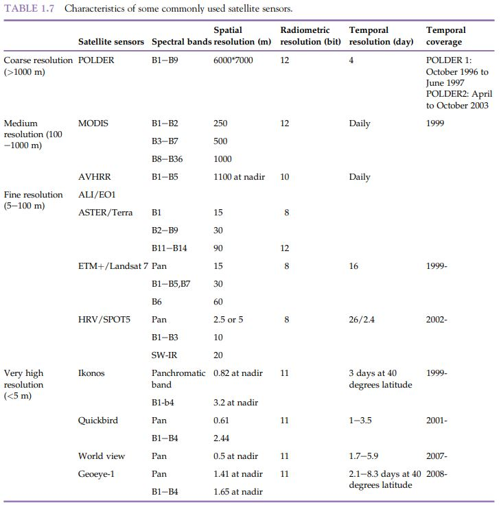
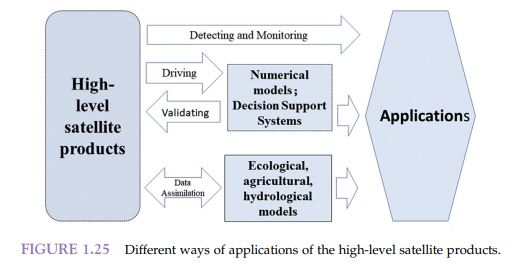

1 Week 1: Introduction to Remote Sensing
1.1 Summary
Remote sensing provides an approach to collect, store and extract environmental information from satellite image without direct contact(Robinson1978). With the variety of available platforms, understanding the characteristics and difference between sensors presents an importance when studying ground features for a specific study area. When considering the suitability of satellite imagery, the user should concern about the basic characteristics:
Type of sensor
Passive sensor measures radiance emitted or reflected by earth-atmospheric system, while active sensor emits EMR waves and measure ‘back-scattered’ radiation. Mentioned by Horning (2008), although passive sensor doesn’t requires energy source and rely on solar radiation, it presents multiple limitation regarding the requirement of daylight, adverse impact by weather and cloud cover, and lack of ability to obtain information for the bottom of feature. Oppositely, other than the ability to operate in day or night and penetrate cloud cover, radar system is also widely adopted for acquiring digital elevation data as signals from most systems can penetrate through canopy or even dry ground (Horning2008).
Resolution
The resolution of imagery can be analysed in spatial, spectral, temporal and radiometric aspects, which is determined by the specification of platform and sensors. Elseview Inc (2020) provided a detailed summary for characteristics of commonly used satellite sensor: 
Data format
Majority of remote sensing imagery is raster data, but data from radar system can also provide vertical information as lidar can make direct measurement of structure.
This week’s practical explores on the data acquisition, pre-processing and basic analysis of satellite imagery in QGIS, SNAP and R. In the pre-processing of imagery for spectral signature analysis, one question that I found interesting to investigate is the upscale or downscale of bands in resampling of data. To perform masking for study area, bands with various spatial resolution requires resampling to have a consistent resolution. Considering the level of details presented in high spatial resolution, I wonder what are the factors that we should consider during the decision of upscale or downscale of image. This question was investigated by Kitron et al. (2006) in their research of public health, which it is pointed out that there is always a temptation to extrapolate from fine-resolution data or interpolate from coarse resolution. The article discussed that coarse resolution may lost the spatial heterogeneity on the micro-scale, while a fine resolution will fails to detect the general patterns on the macro-scale. Authors approached this question by adjusting the scale of their study of diseases and analyse the achievable observations. The conclusion is both resolutions can successfully describe dispersion pattern or process of dispersal from different geographical level data, but the similarity behind is having a solid understanding of the system in time and space according to the purpose of study.
1.2 Applications
Having comprehensive data source with various resolutions, remote sensing is widely applied in geospatial and environmental studies. Acccording to Elseview Inc (2020), application of remote sensing can be categorized into 4 main categories:

Definition of each category is summarised below with related study as example.
Detection and Monitoring
Using remote sensing data to characterise the surface dynamics and interactions from natural environment and human activities
Research Example:
Remote sensing is often applied to drought monitoring and forecasting as it allows observations in large temporal and spatial scales. Vanajith et al. (2021) utilised Sentinel-2 data to calcualte the Normalized Difference Vegetation Index, Normalized Difference Water Index and Vegetation Condition Index for monitoring drought condition over Solapur city, India. Authors used multispectral satellite images due to the provision of a wide range of bands with high resolution and low radiometric calibration incertainty. The result successfully identified the constant drought conditions and demonstrated the suitability of these indices for drought monitoring.
Driving numerical models and decision support systems
Using remote sensing data as input data for enviromental related models and decision support systems
Research Example:
Randin et al. (2020) used remote sensing to monitor biodiversity in the Anthropocene for species distrubution models, because remote sesning is able to provide reliable data that is spatialy comprehensive and time-sensitive about the key factors driving the distribution in biodiveristy. A monitoring approach that the authors suggested was taking advantage of temporal stacking of available time series to capture the niche of species and actual distribution, while increasing the transferability of ecologicla model ().
Validating model simulations
Using remote sensing data to retrieve parameters for validation of numerical models
Research Example:
Crop coefficient can be predicted from fraction of ground cover and vegetation height by using ground data and remote sensing, where remote sensing vegetation indices can also be used to validate the computation of parameters for maize, barley and olives (Pereira2020).
Data assimilation into numerical models
Data assimilation allows estimation of unknowns in model based of avaliable information within a time window. Remote sensing data can be incorporated with measurement data and used in parameter adjustment.
Research Example:
Nair et al. (2020) introduced how remote sensing data in data assimilation to improve initial estimates for hydrollogical and atmoshperic modelling, such as providing soil moisture data at unprecedented spatiotemporl resolutions across different scale for streamflow simulation, which can be complemented with in situ surface and root zone observations for the calibration of model parameters.
These 4 categories effectively provide an insight on the diverse application of remote sensing data, from solely apply for detection, operation of numerical models and validation of models, to using incorporately for estimation of model parameters. The research examples showed that with utilisation of band features can provide estimation through band composition and indices, thus increase the possibility of applying remote sensing imagery with different numerical models. Study by Randin et al. (2020) also demonstrated that user can take advantage of the temporal resolution of remote sensing to obtain long-term series data for testing the temporal transferability of model.
1.3 Reflection
Content in week 1 provides an overview on how data from different platforms can be processed and manipulated to study the spectral significance of ground features. The part that I found interesting is the application of tasseled cap transformation in the study of image statistics. The transformation integrates original image data to new coordinate system by formulating brightness, greenness, wetness according to the spectral signature in bands. Band math increase the range of application of remote sensing data, which is also reflected in the research examples for calculation of indices and coefficients. From previous section, I also had a better understanding on how utilisation of data characteristics can lead to a wider application in different study areas, such as applying time series data to increase transferability in monitoring of changes. The advancement of remote sensing platforms will provide data with better resolution, and further enhance the flexibility of study in different scale and model application.